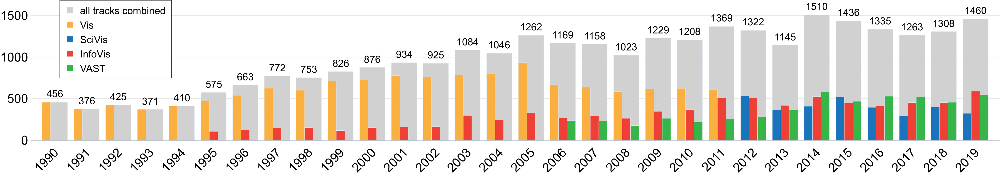

Introduction to VIS30K:
Total # of images (figures and tables), by year.
Average # of images (figures and tables) per page, by year.


Average # of images (figures and tables) per page, by year.
What image (figure and table) data can you find here?
Images from every year of the IEEE VIS conferences:- VAST: 2006-2019
- InfoVis: 1995-2019
- Vis: 1990-2013
- SciVis: 2012-2019
What are the image data?
We collected the VIS30K dataset, a new collection of 29,546 images including every figure and table for 30 years spanning each track of the IEEE Visualization conference series (Vis, SciVis, InfoVis, and VAST).How to extract images automatically?
We used a CNN-based solution and end-to-end framework to extract figures and tables in research paper pages. The main idea behind our approach is to train a CNN with synthesized dummy papers, created with existing visualization image corpora. Equipped with the resulting training set creation, we then automatically extracted figures from paper pages. We have used Faster-RCNN and YOLOv3 to reduce the subsequent human effort. Please try our pre-trained model here.What Data are Released for Reproducible Research?
- Training data- VIS30K database
Interested in source code? Please contact Prof.Chen at chen.8028@osu.edu.